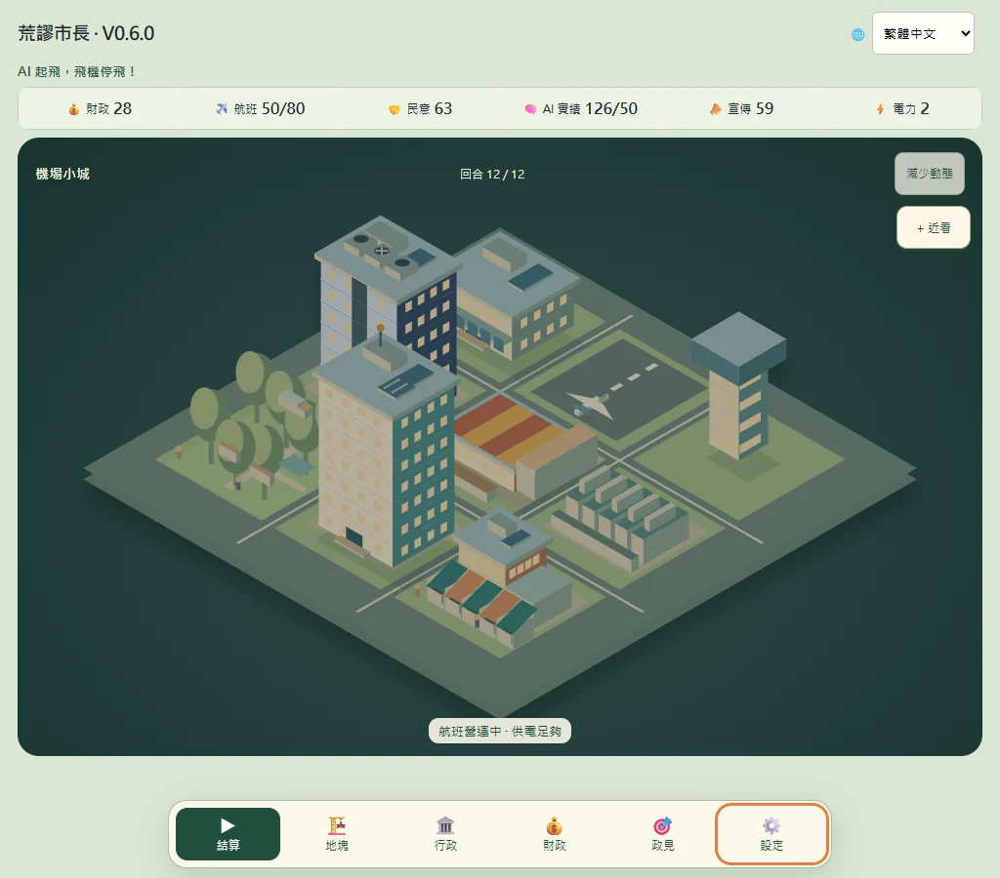
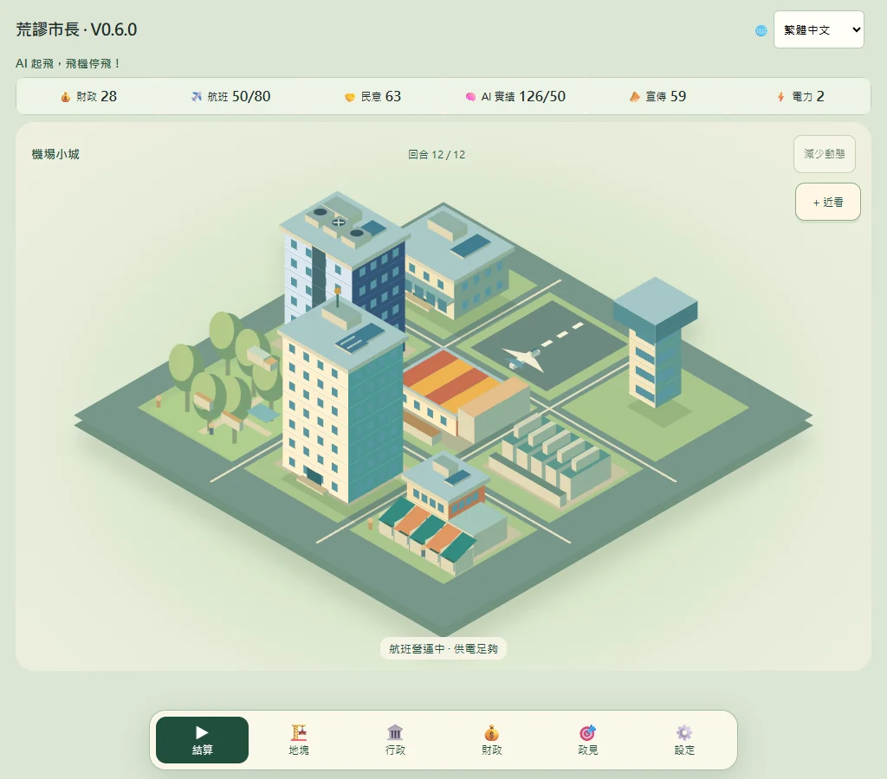
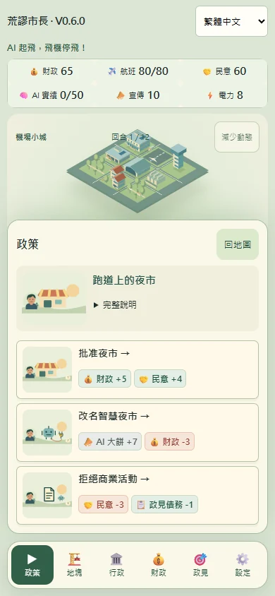

V0.6.0 · Open-source city strategy game
Absurd Mayor
AI takes off, planes grounded!
The airport is still operating, but city hall has announced plans to turn it into an AI district. You have 12 turns to decide how much of the airport to keep, what the city can afford and which campaign promises to fulfil.
繁體中文EnglishFrançaisNederlands

A 12-turn term
Three steps per turn
- Choose a policy
Weigh the immediate benefits, political costs and delayed effects of three options.
- Take a city action
Build, upgrade, enact a city measure or defer action.
- Review the results
Check flights, finances, public support and AI output before the next turn.
V0.6.0 screenshots
Read the city from the map
Buildings rise floor by floor. On phones, policy and finance panels open from the bottom. Icons and figures show the essentials, and you can expand the full details.


Open source · MIT
Take the game and its source with you
Download the single HTML file and open it in a browser to play offline. Progress is saved in your browser. The online and offline editions may use separate storage.